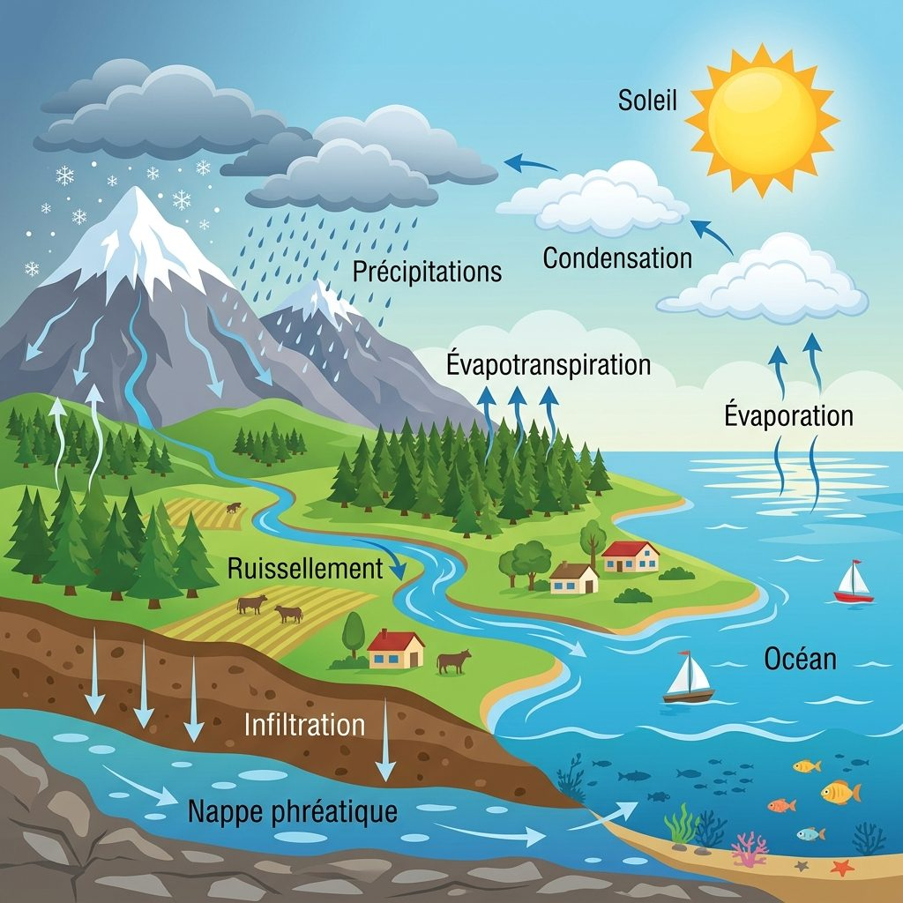
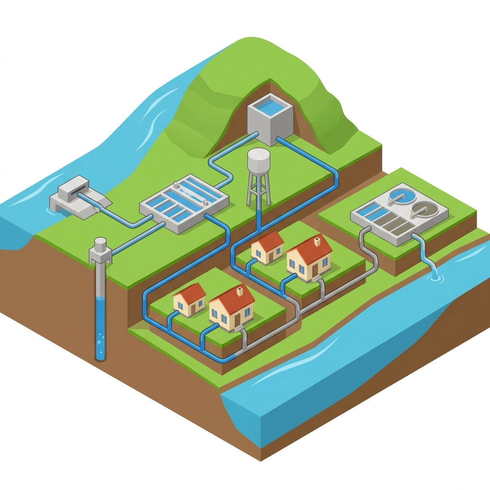
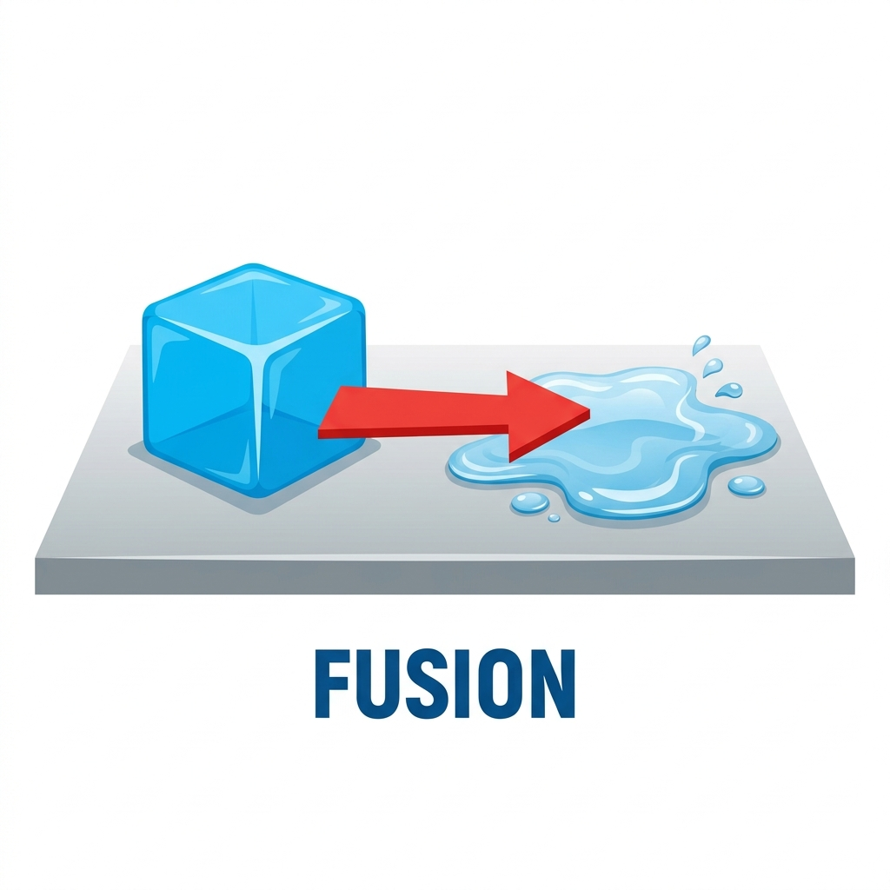
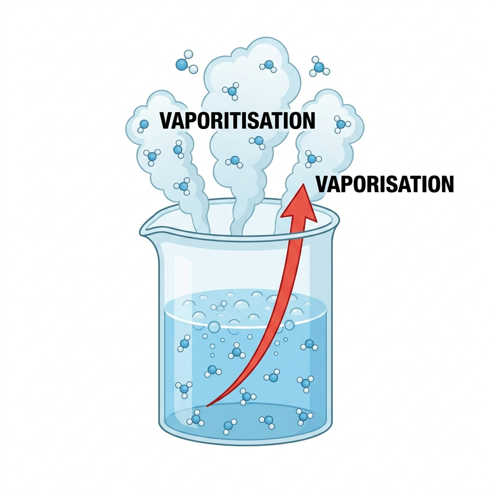
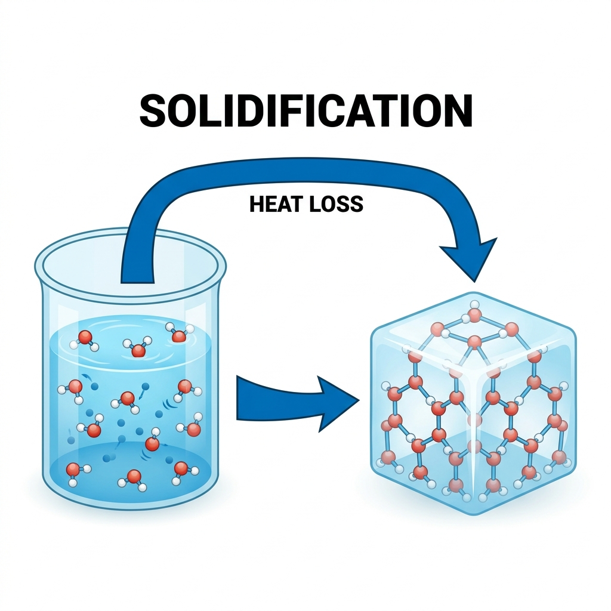
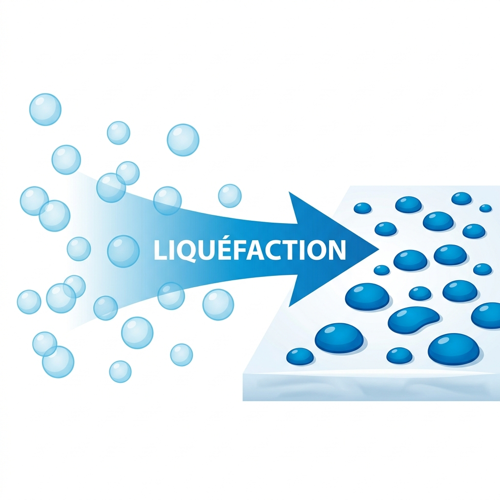

00 L'Enquête : Le voyage incroyable de l'eau
Bonjour, jeune scientifique ! Bienvenue dans cette enquête d'éveil. L'eau que tu bois aujourd'hui est la même que celle que buvaient les dinosaures il y a des millions d'années ! Comment est-ce possible ? C'est grâce aux cycles de l'eau. Dans cette leçon interactive, tu vas explorer le cycle naturel (dans la nature) et le cycle anthropique (créé par l'Homme pour nos besoins).
Le cycle dans la nature
Le parcours de l'eau potable
Les états de la matière
Préserver la ressource
- Nommer et localiser les étapes du cycle naturel de l'eau.
- Décrire le fonctionnement de la distribution de l'eau (captage, château d'eau, station d'épuration).
- Expliquer les changements d'état physique de l'eau.
- Pourquoi l'eau potable nécessite des traitements complexes.
- Le rôle essentiel de la station d'épuration pour protéger la nature.
- L'importance d'adopter des éco-gestes pour économiser l'eau douce.
01 Le cycle naturel de l'eau : la boucle de la Terre
Sous l'action du soleil et de la gravité, l'eau circule perpétuellement entre la mer, le ciel et la terre. Observe le schéma. Clique sur les ronds bleus ou sur les étapes à droite pour en découvrir les secrets.

Éléments explorés : 0 / 8
Fiche d'exploration
Clique sur un numéro du schéma ou sur un bouton ci-dessous pour découvrir ses secrets anatomiques et géologiques.
02 Le cycle anthropique : l'eau domestique dans la ville
L'eau du robinet ne coule pas magiquement ! L'Homme a construit des installations pour prélever l'eau dans la nature, la rendre potable, la distribuer, collecter les eaux usées et les dépolluer. Clique sur les ronds turquoise pour suivre le voyage de l'eau potable.

Étapes explorées : 0 / 10
Carnet de l'eau potable
Clique sur un numéro turquoise ou sur un bouton ci-dessous pour découvrir comment l'Homme gère l'eau.
03 Sciences : les 3 états physiques et les changements d'état de l'eau
L'eau est une matière fascinante. C'est l'une des rares matières présentes naturellement sous trois états physiques différents sur Terre. Clique sur un état ou observe le schéma pour comprendre les changements d'état.
❄️ L'État Solide
Forme propre, l'eau ne s'écoule pas.
Exemples : Neige, glace, grêle, givre, banquise.
💧 L'État Liquide
Prend la forme du récipient, s'écoule, possède une surface plane.
Exemples : Pluie, rosée, brouillard (fines gouttes), rivière.
💨 L'État Gazeux
Invisible, occupe tout l'espace disponible.
Exemples : Vapeur d'eau invisible présente dans l'air.
🔬 Zoom scientifique
Clique sur un des trois états ci-dessus pour découvrir ses propriétés physiques et sa structure moléculaire.
Comment l'eau change-t-elle d'état ?
📈 Par réchauffement (on apporte de la chaleur)

Passage de l'état solide à liquide.
🔍 Clique pour en savoir plus
Passage de l'état liquide à gazeux.
🔍 Clique pour en savoir plus📉 Par refroidissement (on retire de la chaleur)

Passage de l'état liquide à solide.
🔍 Clique pour en savoir plus
Passage de l'état gazeux à liquide.
🔍 Clique pour en savoir plus04 Défi écologique : préserver notre eau douce
L'eau recouvre 70% de la surface de la Terre, mais l'immense majorité est salée. L'eau douce liquide est une ressource rare et fragile. Découvre pourquoi et utilise le calculateur pour tester tes actions écologiques !
Où est l'eau sur Terre ?
Imagine que toute l'eau de la Terre tienne dans un grand seau de 10 litres :
- 97% d'eau salée : (9,7 litres) dans les océans. On ne peut pas la boire ni l'utiliser pour arroser les champs.
- 2% d'eau douce gelée : (200 ml) sous forme de glaciers et de banquise aux pôles (inaccessible).
- Seulement 1% d'eau douce liquide : (une petite cuillère de 100 ml) dans les lacs, les rivières et les nappes phréatiques pour toute l'humanité !
Combien de litres peux-tu économiser ?
Coche les éco-gestes que tu es prêt à faire pour calculer l'eau économisée chaque jour.
Total économisé par jour :
0 Litre
Soit 0 grande bouteille d'eau de 1,5L !
100 Litres par jour
C'est la quantité moyenne d'eau potable consommée par un Belge chaque jour. Plus d'un tiers sert uniquement à tirer la chasse des toilettes !
9 Jours de voyage
L'eau reste en moyenne 9 jours dans l'atmosphère sous forme de vapeur avant de se condenser et de retomber sous forme de précipitations.
Des milliers d'années
L'eau infiltrée très profondément dans les roches souterraines peut rester stockée dans la nappe phréatique pendant des milliers d'années avant de ressortir par une source.